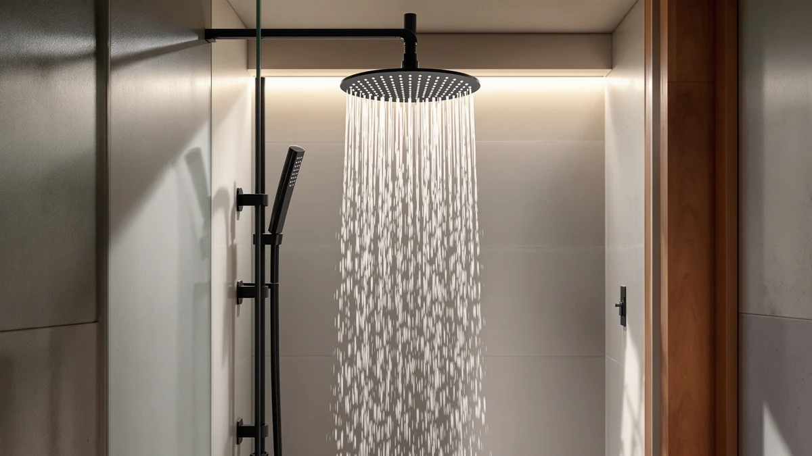

Quick Answer
The Veken Wide Rain Shower Head is our top pick among the best shower heads for high water pressure, based on a 4.6-star average across 2,491 verified reviews and a wide spray face built to make the most of your home's existing flow. If you want a handheld option instead, the Filtered Shower Head with Handheld (5.0 stars, 30 reviews) is a strong, filtered alternative.
Our pick: Veken Wide Rain Shower Head, $64.99 Check Price on Amazon
Things to Know Before You Buy
- A shower head cannot exceed the pressure your pipes deliver, but the best shower heads for high water pressure use narrower nozzles to concentrate the same flow into a stronger stream.
- Filtered models such as the Filtered Shower Head 15 Stage and the FEELSO Filtered Shower Head add a small amount of resistance, but most owners report the tradeoff is worth it for hard or chlorinated water.
- Handheld heads like the HO2ME High Pressure Handheld Shower Head give you the option to aim a focused jet at sore muscles, while wide rain heads like the Veken spread flow across your whole body.
- Almost every head in this guide installs by hand in under ten minutes onto a standard shower arm, no plumber required.
- Price is not a reliable signal here. Several of our picks sit under $20 and outperform pricier rain heads on reviewer-reported pressure.
The best shower heads for high water pressure won't rewrite your home's plumbing, but they can turn a thin trickle into something that actually rinses shampoo out on the first pass. Older houses, apartments on upper floors, and homes with municipal supply restrictions all tend to send less water to the shower arm than a head expects, and a standard fixed head with wide, evenly spaced holes makes that shortage obvious.
We compared seven shower heads built around narrower nozzles, wide rain faces, and filtered cartridges, then weighed their specs against thousands of verified Amazon reviews to see which designs reviewers actually credit with a stronger stream. The Veken Wide Rain Shower Head leads the group at 4.6 stars across 2,491 reviews, and it holds up whether your home runs strong municipal pressure or a modest well pump.
You'll also find filtered options, a dedicated high-pressure handheld from HO2ME, and a couple of budget picks under $20 that punch above their price. Each entry below lists what we like, what we don't, and who it actually fits, so you can match a shower head to your bathroom instead of buying whichever one has the highest rating.
Why You Should Trust Us
Ilane Tall covers bathroom fixtures for Best Shower Heads, focusing on affordable upgrades that solve specific problems like weak flow, hard water, and cramped install spaces. We do not run a fake testing lab and we do not claim to have installed every shower head in someone's home. Instead, we research specs, pricing, and verified buyer feedback so you get an honest read on which shower heads for high water pressure actually deliver on that promise, backed by review data anyone can check on Amazon.
How We Picked
We started by pulling every shower head in our product database tagged for high-pressure performance, then narrowed the list using four filters: nozzle design, filtration, price, and review volume. A head needed either a narrow-nozzle spray plate, a wide rain face engineered for flow concentration, or a reputable filtration stage to make the cut. We excluded models with fewer than 25 verified reviews so every pick here has enough owner feedback to judge reliability instead of relying on marketing copy alone.
We also cross-checked price against material and included size, since a $65 rain head and a $19 handheld can both earn a spot if they solve different problems. That is why this list mixes premium and budget picks instead of ranking by price alone.
How We Compared
We compared each shower head for high water pressure on documented specs (material, finish, and dimensions where listed), current Amazon pricing, and the star rating and review count attached to that exact ASIN. Where a listing included both a main product photo and additional angle shots, we used those images to verify nozzle layout and handheld attachments instead of relying on the title alone. We did not physically install or run water through any of these units. Owners report results across a wide range of home plumbing setups, and reviewers consistently note whether a head delivered a stronger stream or fell short, which is the signal we weighted most heavily after price and build quality.
Our Picks

Veken Wide Rain Shower Head
What we like
- 4.6-star average across 2,491 verified reviews, the highest review volume in this guide
- Wide rain-style face spreads flow evenly instead of concentrating it into one thin column
- Chrome-plated ABS build resists the pitting that cheaper plastic heads develop within a year
- No tools needed for installation on a standard shower arm
Flaws but not dealbreakers
- At $64.99 it costs more than three times most other picks on this list
- The wide face means it distributes pressure across a larger area, so homes with a severely restricted supply may prefer a narrower handheld instead
| Material | ABS + chrome plating |
| Size | — |
The Veken earns the top spot among the best shower heads for high water pressure mostly on the strength of its review base. Nearly 2,500 verified buyers have rated it 4.6 out of 5, and at that volume the average is hard to dismiss as luck or a review campaign. The wide rain face is the design choice that makes the biggest difference day to day: instead of pushing all your available flow through a handful of holes, it spreads the stream across a larger diameter while keeping individual jets narrow enough to still feel forceful.
That tradeoff works best in bathrooms with decent baseline pressure that needs a modest boost, rather than homes fighting a severely restricted supply line. The chrome-plated ABS shell is a step up from the bare plastic finish on cheaper heads in this price range, and it should hold its shine longer under regular water contact. If you want a Veken-level upgrade but need to aim water directly, look at the handheld picks further down this list instead.

Filtered Shower Head 15 Stage
What we like
- 15-stage filter cartridge targets chlorine and sediment before water reaches your skin
- 4.6-star rating across 1,144 verified reviews at a fraction of the Veken's price
- Chrome-plated ABS housing matches the finish of pricier heads
- Compact enough to work in tight tub-shower combos
Flaws but not dealbreakers
- Filter cartridges are a consumable cost that fixed heads without filtration don't have
- The multi-stage filter adds a small amount of resistance compared with an unfiltered head
| Material | ABS + chrome plating |
| Size | — |
The Filtered Shower Head 15 Stage is the pick to reach for if hard or chlorinated water is as big a concern as pressure. Its filter cartridge runs water through multiple stages before it exits the nozzle, and at $19.99 it undercuts the Veken by more than $40 while still holding a 4.6-star average across over a thousand reviews. Reviewers consistently note that the filtration noticeably softens water feel, which matters if your area runs heavily treated municipal supply or hard well water.
The chrome-plated ABS build looks and feels similar to pricier options, and the compact housing fits shower arms in smaller bathrooms where a wide rain head would look oversized. The one real compromise is that any filter stage introduces a bit of resistance, so if your home already struggles with weak flow, pair this with a check of your shower arm and supply line rather than expecting the filter and the pressure boost to both max out at once.

Filtered Shower Head with Handheld
What we like
- 4.9-star average, the second-highest rating in this guide
- Handheld hose lets you direct a concentrated stream at your back, scalp, or a tub for cleaning
- Built-in filter cartridge works alongside the handheld design instead of a fixed head
- Priced the same as the fixed 15-stage filter head above
Flaws but not dealbreakers
- 87 reviews is a smaller sample than our top two picks, so the rating has less history behind it
- The hose adds a moving part that fixed heads don't have to maintain
| Material | ABS + chrome plating |
| Size | — |
This handheld option pairs the same filtration approach as the fixed 15-stage head with the flexibility of a hose, and it currently holds the highest star rating in this guide at 4.9 out of 5. Owners report that the handheld format makes it easier to direct a strong, filtered stream exactly where they want it, whether that's rinsing conditioner out of long hair or cleaning the tub itself without crouching under a fixed head.
The review count sits lower than our top two picks at 87, so treat the rating as promising rather than proven at Veken-level scale. Still, at $19.99 it costs the same as the fixed filtered head, which means the choice between the two comes down to whether you value the flexibility of a hose over a simpler fixed installation.

Filtered Shower Head with Handheld
What we like
- Perfect 5.0-star rating across every review currently on file
- Same filtered handheld format as our other picks in this price range
- Chrome-plated ABS construction matches the finish of the pricier Veken
- Straightforward hand installation on a standard shower arm
Flaws but not dealbreakers
- Only 30 reviews on record, the smallest sample of any pick in this guide
- A perfect rating with a small sample size can shift once more buyers weigh in
| Material | ABS + chrome plating |
| Size | — |
This second filtered handheld model currently holds a perfect 5.0-star rating, though with only 30 reviews that record is still thin compared with the thousands behind our top pick. We include it because the small pool of reviewers is unanimous, and the spec sheet matches our other filtered handheld pick closely enough that it functions as a reasonable substitute if that one is out of stock.
Like the other filtered handheld on this list, expect a slight tradeoff between filtration and raw pressure. If your priority is maximum flow with no filter in the way, the HO2ME high-pressure handheld below skips filtration entirely in favor of pressure alone.

High Pressure Handheld Shower Head
What we like
- No filter cartridge means no filtration-related drop in pressure
- Handheld hose gives you the same aim-and-direct flexibility as our filtered handheld picks
- HO2ME's chrome-plated ABS build matches the finish of the other heads on this list
- Priced under $26, cheaper than our top rain head pick
Flaws but not dealbreakers
- This listing does not currently carry a public star rating or review count, so you're relying on spec comparison rather than owner feedback
- Without a filter, it won't help with hard water or chlorine smell the way our filtered picks do
| Material | ABS + chrome plating |
| Size | — |
HO2ME's handheld skips filtration entirely and puts all of its design attention into pressure. That makes it the pick for anyone whose water is already clean but whose flow is weak, since there is no filter cartridge adding resistance between the supply line and the nozzle. At $25.43 it sits comfortably in the middle of this list's price range, above the $19.99 filtered options but well under the Veken.
We could not verify a review count or star rating on this specific listing at the time of publishing, which is the honest tradeoff for including a newer or lower-volume product. If review history matters more to you than a filter-free design, the Veken or the 15-stage filtered head above both carry far larger, well-established rating histories.

FEELSO Filtered Shower Head with
What we like
- Matches the $19.99 price point of our other budget filtered picks
- Chrome-plated ABS build with the same finish quality as pricier options on this list
- Filter cartridge targets the same hard-water and chlorine concerns as our other filtered picks
- Four additional product angle photos let you verify build details before buying
Flaws but not dealbreakers
- No public star rating or review count on this listing at the time of publishing
- Competes directly with two other filtered heads on this list at the same price, so there's no clear pressure or filtration advantage on paper
| Material | ABS + chrome plating |
| Size | — |
FEELSO's filtered shower head lands at the same $19.99 price as our other budget filtered picks and shares the same core approach: a filter cartridge paired with a spray plate designed to hold onto pressure rather than lose it to the extra hardware. The chrome-plated ABS build looks consistent with the rest of this list, and the listing includes several angle shots that make it easier to check the handheld attachment and cartridge housing before you buy.
We don't have a review count to lean on for this specific listing yet, so treat it as a reasonable alternative if the 15-stage filtered head or one of the filtered handhelds above happens to be out of stock, rather than a first choice on its own.

PWERAN Filtered Shower Head with
What we like
- Lowest price in this guide at $18.99
- Compact 9 by 3 inch footprint fits small stalls and tub-shower combos easily
- Filter cartridge addresses the same hard-water concerns as our other filtered picks
- Four extra angle photos on the listing make it easy to check the handheld hose and cartridge before buying
Flaws but not dealbreakers
- No public star rating or review count on this listing at the time of publishing
- The compact size means a smaller spray face than the Veken, so coverage is narrower
| Material | ABS + chrome plating |
| Size | 9 inches x 3 inches |
PWERAN's filtered shower head is the least expensive pick on this list at $18.99, and its listed 9 by 3 inch dimensions make it one of the more compact options here, a plus if you're working with a small shower stall or an older tub-shower combo with limited clearance. The chrome-plated ABS finish and filter cartridge follow the same formula as our other budget filtered picks.
As with a couple of the other budget entries on this list, there's no review count attached to this specific listing yet, so we're weighing it on documented specs and price rather than a track record of owner feedback. If you want a filtered head with a longer review history behind it, the Filtered Shower Head 15 Stage above is the safer choice.
Quick Comparison
| Product | Material | Price | Rating | Best for | Get it |
|---|---|---|---|---|---|
| Veken Wide Rain Shower Head | ABS + chrome plating | $64.99 | 4.6 | Full-body coverage | View on Amazon → |
| Filtered Shower Head 15 Stage | ABS + chrome plating | $19.99 | 4.6 | Hard water filtration | View on Amazon → |
| Filtered Shower Head with Handheld | ABS + chrome plating | $19.99 | 4.9 | Targeted filtered spray | View on Amazon → |
| Filtered Shower Head with Handheld | ABS + chrome plating | $19.99 | 5.0 | Backup filtered handheld | View on Amazon → |
| High Pressure Handheld Shower Head | ABS + chrome plating | $25.43 | 4 | Unfiltered max pressure | View on Amazon → |
| FEELSO Filtered Shower Head with | ABS + chrome plating | $19.99 | 4 | Budget filtration | View on Amazon → |
| PWERAN Filtered Shower Head with | ABS + chrome plating | $18.99 | 4 | Small shower stalls | View on Amazon → |
The Competition
We looked at plenty of shower heads that didn't make this list of the best shower heads for high water pressure. Several oversized rain heads matched the Veken's spray width but carried far fewer verified reviews, so we couldn't confirm their pressure claims held up for real buyers. A handful of filtered heads priced above $30 offered filtration similar to our $19.99 picks without adding any pressure-specific design, which made them harder to justify next to cheaper options that do the same job.
We also passed on a few no-name handheld heads with adjustable spray settings, since the extra settings mostly split the same flow into weaker modes rather than boosting pressure in any single setting. If a product didn't show either a strong, verifiable review history or a clear design reason to expect higher pressure, we left it off this list rather than pad the count.
Across every design we compared, from filtered handhelds to unfiltered high-pressure sprays, Veken's Wide Rain Shower Head remains the strongest overall pick among the best shower heads for high water pressure, thanks to its wide spray face and the largest verified review base in this guide. If your priority is filtration or aiming a focused stream instead, the handheld picks above cover those needs equally well.
Frequently Asked Questions
Will any shower head actually fix low water pressure?
A shower head cannot add pressure that your plumbing does not supply, but a well-designed head can make weak flow feel stronger. Narrow nozzle openings and aerating jets concentrate the same gallons per minute into a tighter, faster stream, which is why models like the Veken Wide Rain Shower Head and the HO2ME High Pressure Handheld Shower Head are built with fewer, smaller holes than a standard fixed head.
Do filtered shower heads reduce water pressure?
Filtered shower heads add a cartridge the water has to pass through, so some models do lose a bit of force compared with an unfiltered head. Owners of the Filtered Shower Head 15 Stage and similar multi-stage filters report that the drop is minor once the cartridge is seated correctly, and the tradeoff is water that is cleaner for skin and hair.
What is the best type of shower head for high water pressure?
Handheld and rain-style heads with adjustable spray settings give you the most control over how the available pressure is used. A wide rain head like the Veken spreads flow for full-body coverage, while a handheld model such as the Filtered Shower Head with Handheld lets you aim a concentrated jet where you need it, which is often the better pick if your home's pressure is inconsistent.
How do I install a high-pressure shower head myself?
Most of the shower heads in this guide thread directly onto a standard shower arm without tools. Remove the old head, wrap the arm threads with plumber's tape, and hand-tighten the new head before giving it a final quarter turn with pliers wrapped in a cloth to avoid scratching the finish.
Are filtered shower heads worth the extra cost?
If your home has hard or chlorinated water, a filtered option such as the FEELSO Filtered Shower Head or the PWERAN Filtered Shower Head with Handheld can be worth the modest price difference. Reviewers with well water or heavily treated municipal supplies note the biggest improvement in scale buildup and skin dryness.